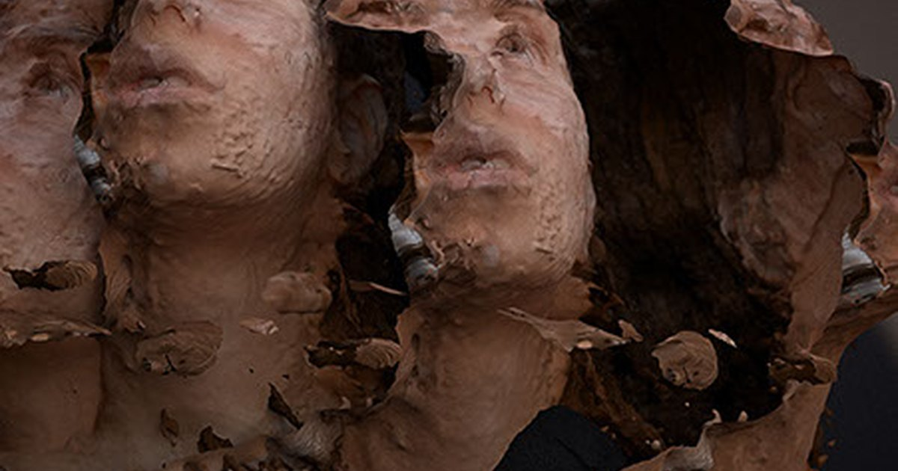
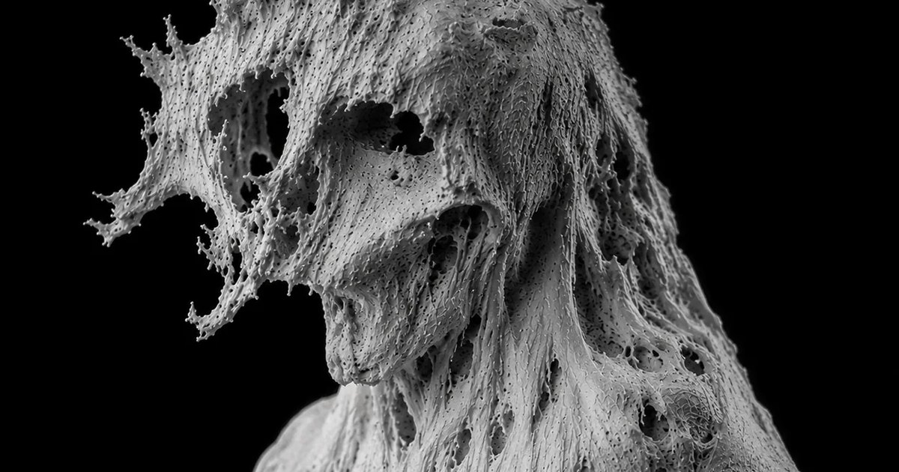
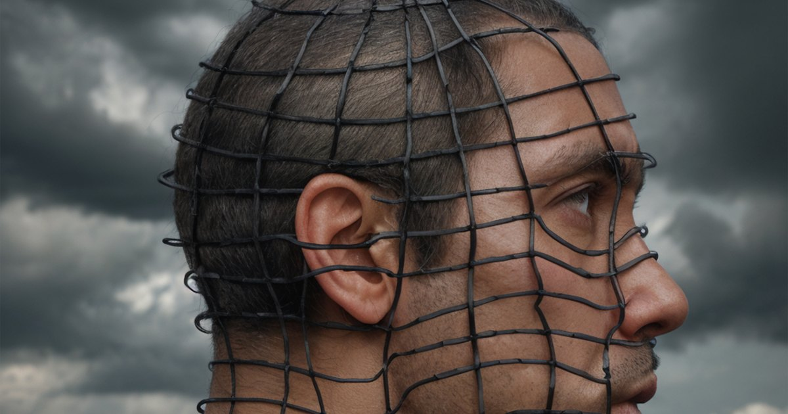

Mehran Ahmadi — designer, photographer and creative technologist
Designer, Photographer, Creative Technologist. Building open-source tools from creative practice.

Image systems
Generative Art
Reconstructed characters, anatomical systems and painterly restorations, built with Photoshop and local diffusion models.
Enter
Spatial capture
Photogrammetry
3D scans, displacement maps and failed reconstructions — bodies turned into digital residue.
Enter
Digital art
YOU

Erosion
Brambles

AI portraits
Head Reconstruction


Writing
Journal
Process notes on image systems, AI workflows, MetaHumans and the experiments behind the work.
Read
Process note
Image Processing
A photographic experiment shaped by chaos theory, and how small changes to an input cascade into a different picture.
Read
Moving image
Digital Sculptures
Realtime sculptural forms and digital bodies, presented as a video work.
Watch